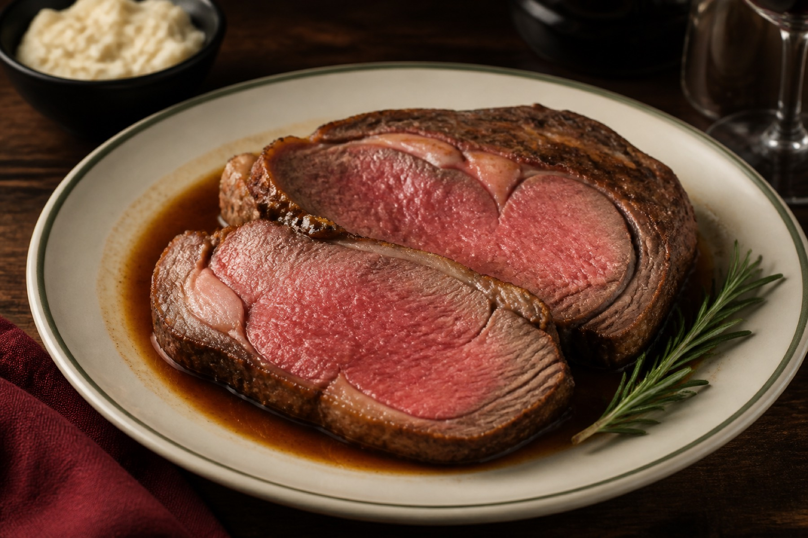
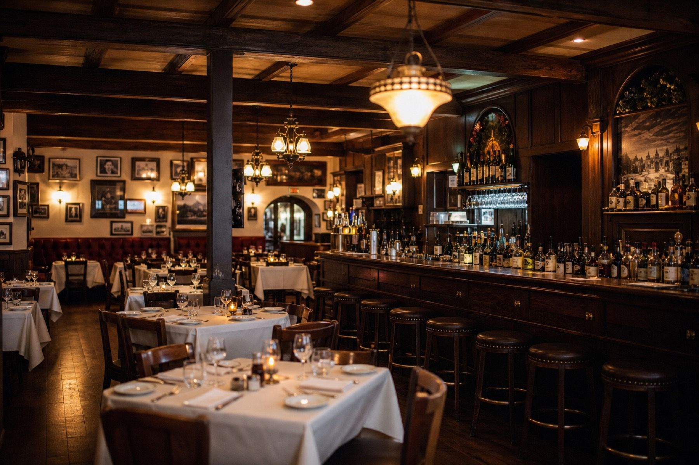

Prime rib
The house plate. Family-style, the way regulars have ordered it for decades.
Antioch · East 18th Street · Since 1956
Family-style prime rib, pasta, and cocktails — served in the little house the town never stopped driving to.
Open daily · Lunch 11–2 · Dinner 4–10
The house
Floyd “Mac” McKinney built this house in 1925. On St. Patrick’s Day in 1956 he opened a bar in a converted room, and Antioch has been finding its way up the walk ever since.
Gary Noe bought the restaurant in 1983 and set the family-style menu the East County still asks for — prime rib, pasta, minestrone, hot bread. After a year of restoration, new owners Joe Martinez and Ron Harrison reopened the rooms in August 2026 with the same name and the same recipes. Former chef and manager Rick Cook helped pass them along. Sheri Vallero and family run the floor.

Regulars
Always packed but worth the trip every time :-). Great food, service and value for your $$$ never disappoints our family.
Mac's is back! Same recipes that everyone knew and loved.
It is the best restaurant and bar on the Delta and beyond! I drive from Rio Vista one or two times a week to enjoy the great food, and spend time with wonderful people.
Hours
Debit and credit cards accepted.
Call (925) 757-9908